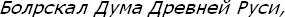
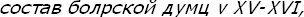

[184] V. Kliuchevskij,

4. baskı, Moskova, 1910; A. A. Zimin,

Moskova, 1958, s. 41-48; Thornton Anderson, Russian Political Thought, Praeger, New York, 1984, s. 86-87; Ruslan Grigoreviç Skrynnikov, "Der Begriff semoderzavie (Selbst-herrschaft) und die Entwicklung Staendisch-Representativer Einrichtungen im Russland des 16. Jahrh.", Geschichte Altrusslands, in der Begriffswelt ihrer Quéllen, Stuttgart, 1986. s. 16-17.